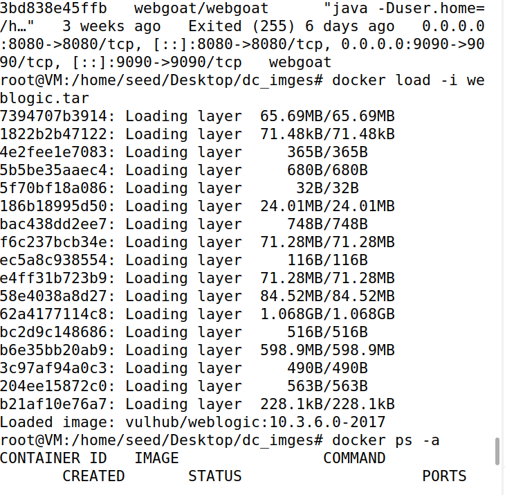
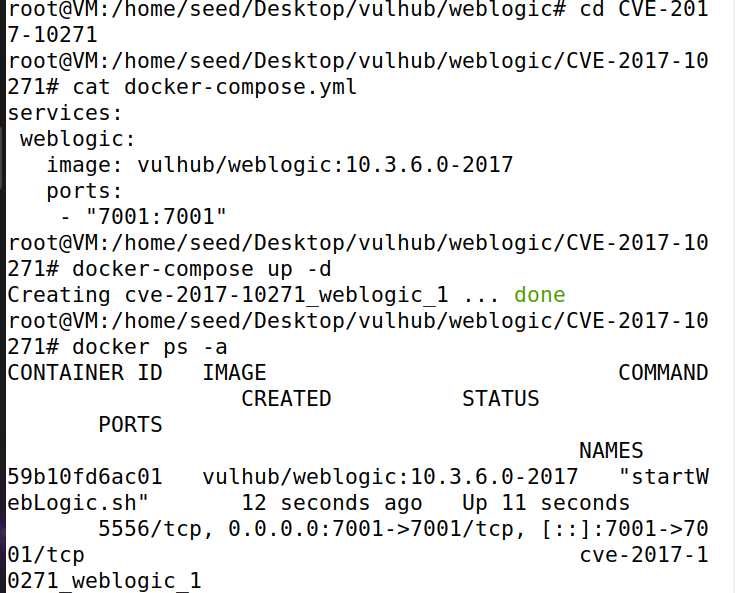
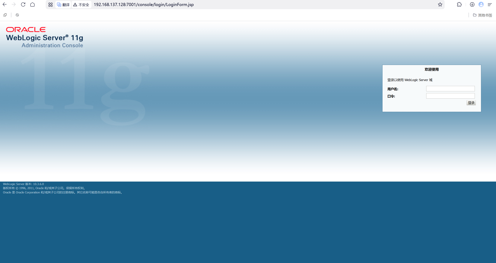
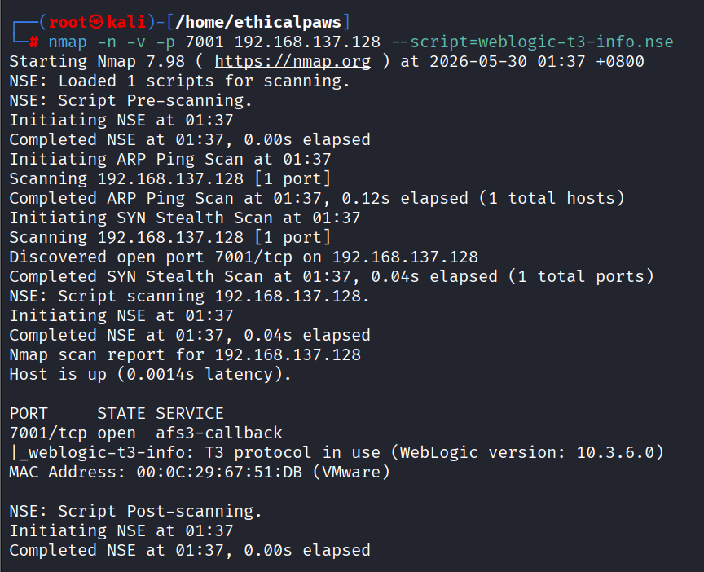

Weblogic-CVE-2017-10271
影响版本:weblogic 版本10.3.6.0.0;12.2.1.1.0;12.2.1.2.0;12.1.3.0.0
环境搭建
使用Vulhub搭建靶场环境，由于虚拟机网络不稳定问题，我采用物理机拉取镜像到本地，然后用虚拟机从物理机中拉取镜像tar包就可以完美绕开网络不稳定问题

docker-compose up -d运行容器

浏览器可以成功访问证明环境已经搭建完成

版本探测
漏洞利用前，知道版本信息至关重要
探测方法：
1. 通过Web页面，网页源代码或页面底部，有时会显示版本信息
暴露了版本号10.3.6.0
2. 通过T3协议：使用nmap的脚本进行探测，这是最直接的方式
namp -n -v -p 7001 192.168.137.128 --script=weblogic-t3-info.nse

同样可以暴露出版本号10.3.6.0
漏洞复现
漏洞本质
WebLogic接收了攻击者发送的恶意XML，然后用自己的"解码器"去解析，攻击者通过在XML里"描述"一个恶意对象来达到攻击目的
wls-wsat是weblogic webservice的一个接口，恰好会用到XMLDecoder处理数据
漏洞原理
正常的XMLDecoder使用场景
WebLogic没有验证XML内容，直接反序列化用户提交的数据
```java
// WebLogic内部代码（简化）
protected void handleRequest(HttpRequest request) {
String xmlBody = request.getParameter("xml");
XMLDecoder decoder = new XMLDecoder(new ByteArrayInputStream(xmlBody.getBytes()));
decoder.readObject(); // ⚠️ 直接反序列化用户输入的XML！
decoder.close();
}
XMLDecoder反序列化原理
- 什么是XMLDecoder：是一个java内置的功能，专门用来把XML格式的数据变成java对象
- XMLDecoder的工作方式：XML标签=java代码的可视化表达
<!-- 这段XML -->
<void class="java.util.Date" method="toString"/>
new java.util.Date().toString()
- 核心标签：
调用方法或创建对象 new 或 method()